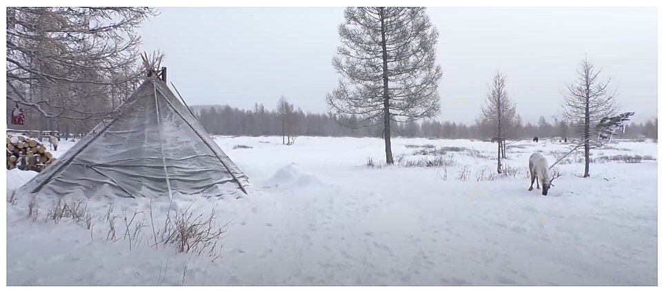
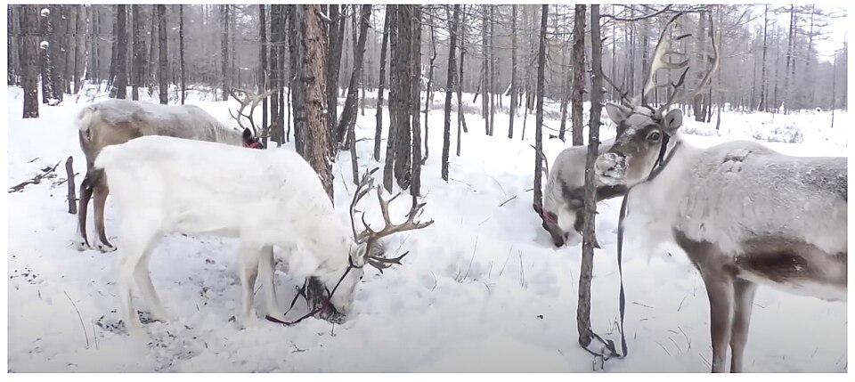
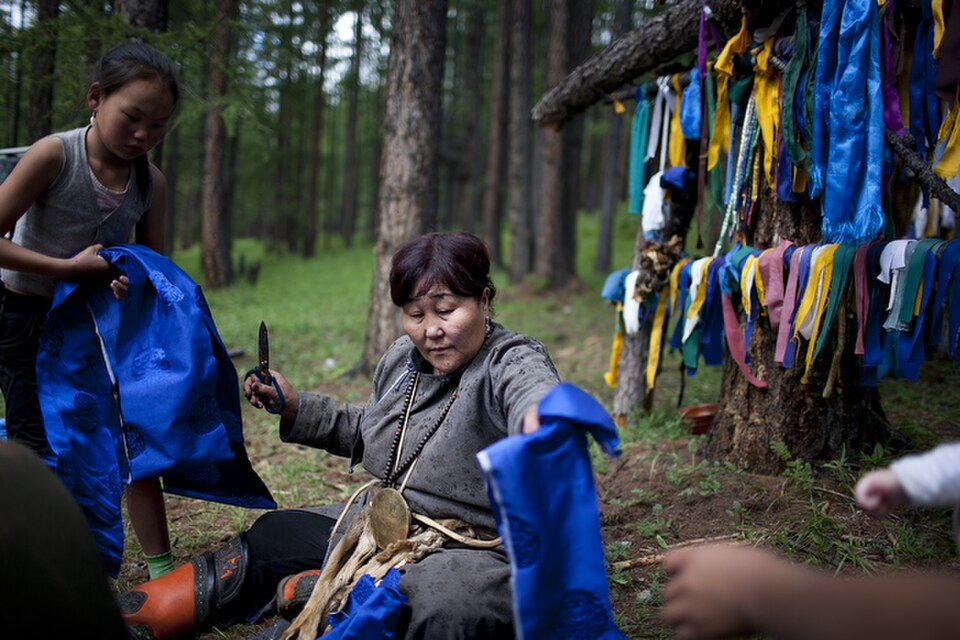
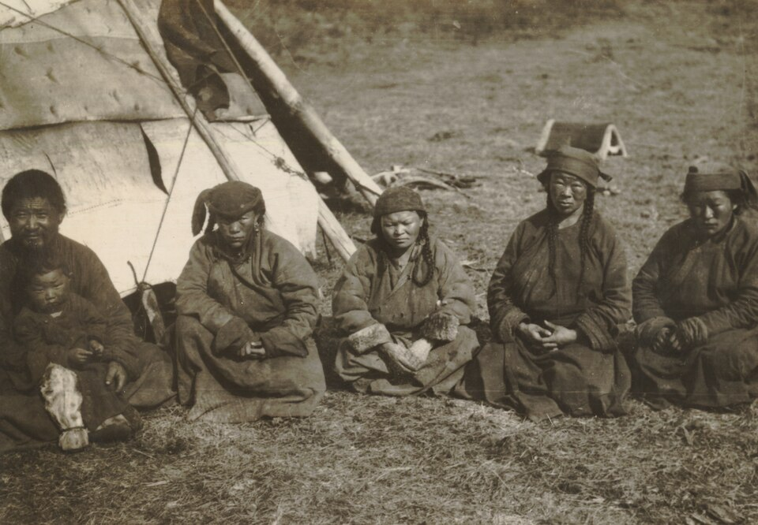
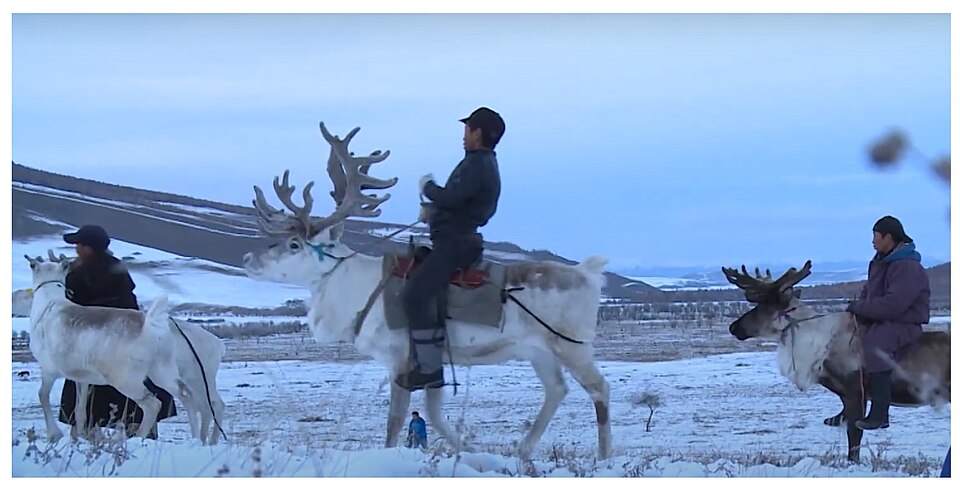
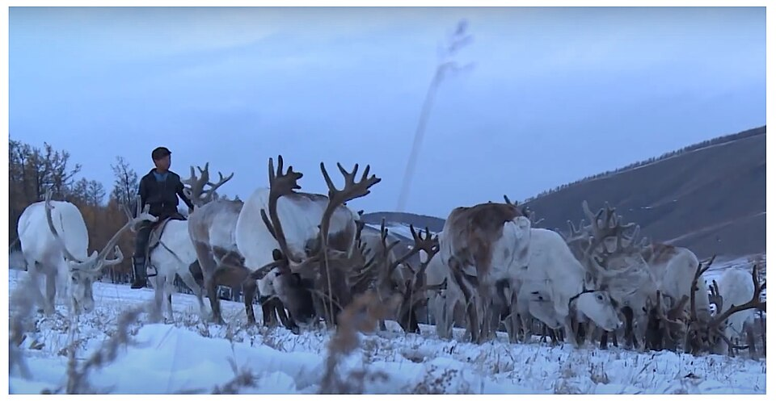

Where the Mongolian steppes end and the wild mountains of the Eastern Sayans begin, lives one of the smallest tribes on the planet — the Dukha. These are the last nomadic reindeer herders who do not simply raise animals for meat, but live with them in total symbiosis. For the Dukha, a reindeer is transport, a source of warmth, a sacred animal, and a best friend. While the rest of the world switches to snowmobiles, the Dukha continue to saddle giant reindeer to move through the deep snow of the Taiga, where even machinery freezes.
The Dukha are the only people in the world who have tamed reindeer for riding. These are not the reindeer we see in Santa Claus's sleigh. Dukha reindeer are much larger and hardier. To avoid damaging the animal's spine, the Dukha place the saddle closer to the shoulder blades rather than the lower back. A child in the tribe learns to ride a reindeer before they learn to walk. This creates an incredible connection: the reindeer understands the rider by the slightest movement of their body.
The Dukha dwelling is called an "ortц." It is a conical tent, similar to a Native American teepee, but adapted for extreme cold. The frame consists of 20–30 larch poles covered with canvas or bark (in the past, hides were used). A hearth always burns in the center. Despite the thin walls, the temperature inside the ortц remains high enough to stay without outer clothing, even if it is -50°C outside. Such a home can be assembled or disassembled in half an hour. This is critical, as the Dukha change camp sites 5–10 times a year, following the reindeer in search of fresh lichen (moss).


Unlike many other tribes, the Dukha practically do not eat the meat of their own reindeer. For them, slaughtering a reindeer is a last resort, comparable to a tragedy. The main product is reindeer milk. It is very fatty and thick, almost like cream. They use it to make cheese, yogurt, and "tsai" (tea with milk and salt), which provides energy for the whole day. Wild berries, plant roots, and fish from mountain rivers supplement their diet. This allows them to maintain healthy teeth and joints into old age without any modern medicine.
For the Dukha, the entire world around them is alive. Every mountain, river, and old tree has its own spirit. Shamanism here is not a religion, but a way of survival. Dukha shamans enter a trance to the beat of a drum to ask ancestors where to lead the herd or how to heal a sick animal. In every herd, there is a "white reindeer," considered the bearer of a guardian spirit. It is forbidden to ride it or load it with cargo. This is the tribe's living talisman. It is believed that deities communicate with the tribe through it. If the white reindeer is calm, all will be well in the settlement. If it becomes anxious without apparent reason, the Dukha immediately strike camp and move, believing the animal is warning of danger.
Reindeer have a unique ability to find their way home in total darkness and blizzards, orienting themselves by scents and the Earth's magnetic field. The Dukha simply trust the animal if they lose their way. The Dukha claim their reindeer can smell a wolf from several kilometers away. By the herd's behavior, the herder understands where the threat is coming from and prepares his rifle in advance. The Dukha navigate the Taiga using signs that no GPS would understand. For example, they know that reindeer always turn their ears toward the slightest source of sound or threat. By the direction of the lead reindeer's ears, a herder can tell where a watering hole is or where a predator is lurking, even in pitch darkness.


Instead of soap, the Dukha often use ash and decoctions of pine needles, which perfectly disinfect the skin and protect against bites from Taiga insects in the summer. The Dukha live in small groups — from two to five families, called "olal" or "ulus." It is impossible to survive alone in the Taiga, but a group that is too large cannot survive either, as there wouldn't be enough lichen for the reindeer. Every family in the ulus knows their animals "by sight." In the evening, when the herd returns to the tents, the reindeer approach their owners for a portion of salt — the only delicacy the Dukha specifically buy in villages to keep the animals tied to the camp.
While men are busy herding and protecting the livestock from wolves, the Dukha woman is the brain and heart of the ortц. She is responsible for processing milk, cooking, and most importantly, maintaining the fire. Fire for the Dukha is a sacred entity. You cannot throw trash into it or spit in it. The fire in the center of the ortц is not just a tool for cooking. The Dukha treat it as a respected guest. It is forbidden to throw sharp objects into the fire so as not to "wound" the flame. It is believed that if the fire crackles in a certain way, it warns of upcoming changes or guests. Elders can "read" the flame for hours to decide on migration.
Women know how to sew clothes from reindeer hides ("deeli") that withstand frosts down to -50°C. Such a jacket weighs a lot, but you can sleep directly on the snow in it. When the temperature inside the ortц drops to -50°C, no fire saves you 100%. Dukha reindeer are very social and calm creatures. Young fawns, who are not yet used to extreme cold or need protection, are often taken directly inside the tent. Children sleep with them on the skins. A reindeer's body temperature is about 38-39°C, and their thick fur works as an ideal thermos. This is how a mental bond is formed from birth: human and reindeer become one family. A reindeer gets used to the human's scent, and the child learns to trust the animal on an instinctive level.
Dukha children have no playgrounds. Their "toys" are fawns and knives. A 10-year-old boy is already a full-fledged herder's assistant. He must be able to fend off a wolf alone and find his way to camp in thick fog. Girls are taught to milk reindeer (which is harder than milking cows, as a reindeer only gives milk when she wants to) and the craft of dressing hides. This upbringing makes them completely autonomous individuals by age 15.


The Dukha use different parts of the reindeer hide for different purposes. Kamis: Hide from the reindeer's legs is used for winter boots — unty. It is incredibly durable and does not slip on ice. Torbaza: Boots are sewn so that a layer of air always remains inside — this is the best insulator. Sinew Threads: For sewing hides, the Dukha use dried and split reindeer tendons. They do not rot from moisture and expand when wet, tightly "sealing" the seams, making the clothing waterproof. Although many have old Soviet rifles, the Dukha still use ancient traps and knowledge of animal habits. They can track a musk deer or sable for weeks without leaving a trace. A reindeer helps in the hunt: it moves silently, and forest animals are not afraid of its scent, allowing the hunter to get close to the prey.
There are no hospitals in the Taiga. The main medicine is "panty" (young reindeer antlers). In the spring, when the antlers are full of blood, the Dukha make medicinal infusions that can put even the severely ill back on their feet. In the spring, when young antlers grow, the Dukha perform a delicate procedure of cutting them. This does not harm the animal, as the antlers fall off every year anyway. Blood from the antlers is considered an elixir of immortality. It is mixed with vodka or drunk pure to strengthen the immune system. This is why the Dukha practically have no problems with blood pressure or the heart. They also know hundreds of types of mosses and lichens: some treat coughs, others act as potent antiseptics for wounds.
The Dukha believe every mountain has a master. Before entering a new valley, the elder performs a ritual of "feeding the fire" and the mountains, splashing milk in the four cardinal directions. If this is not done, the reindeer may scatter or fall ill — this is how the spirits show their displeasure.
For an ordinary person, Sutai Tsai might seem strange, but in the Taiga, it is a lifesaver. Reindeer milk is many times fattier than cow's milk. It contains critical amino acids that prevent blood from "thickening" in the cold. In the mountains, the air is very dry in winter, and the body loses salt quickly. Sutai Tsai restores the water-salt balance. Sometimes barley flour fried in reindeer fat is added. This creates a thick porridge that sustains a person for 5-6 hours of active trekking through deep snow.
In the Dukha view, speaking a person's name aloud in the forest is like lighting a signal fire for evil forces. The Taiga is full of "predatory spirits" who can steal a soul if they learn its name. At home and in the pasture, people use hierarchical terms. Even a husband and wife may not call each other by name for years, using phrases like "father of my children" or "my woman." If someone must be called in a dangerous place, "false" nicknames or sounds mimicking birds or the whistling wind are used. This confuses evil spirits and protects the person.
There is no mail, but there is a "reindeer relay." If a message needs to be sent to another settlement, a rider on a reindeer can cover 80-100 km across mountain ridges in a day. A reindeer goes where a horse would break its legs and a human would sink to their waist. Wolves are the main enemies. But the Dukha try not to kill wolves unless absolutely necessary, believing that "the blood of a wolf will bring even more wolves." Instead, they use a system of signals, fires, and special Bankhar dogs to drive the predator away by simply marking the territory.
Today, the Dukha tribe is at a crossroads. Only about 200–300 of them remain. The modern world is encroaching: youth leave for cities for education, and satellite internet reaches the deepest valleys of the Taiga. But those who stay do so consciously. They choose a freedom that money cannot buy and a silence that cannot be found in a metropolis. The story of the Dukha is a reminder of how flexible and resilient a human can be. In a world where we panic over a dead smartphone or a weak Wi-Fi signal, the Dukha continue to live in total harmony with nature, relying only on their hands, the wisdom of ancestors, and their faithful reindeer.
As long as the sound of the bell on the white reindeer's neck is heard in the Sayans, our world still retains its primal connection to its roots. Perhaps we have something to learn from them — at least, how to find warmth where everything around is freezing.